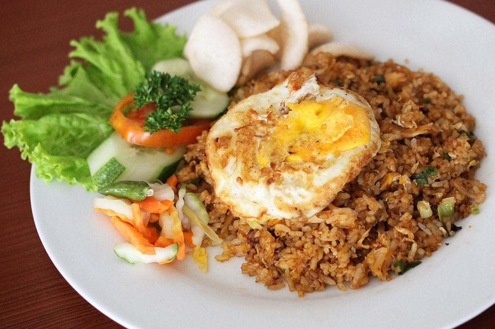

MENU TERBAIK
NASI GORENG NUSANTARA
Nasi goreng dengan bumbu istimewa dan topping lezat.
rasa yang akan mengingatkan kita tentang kenikmatan makanan nusantara
yang sangat super lezat dan menggugah selera
Rp25.000